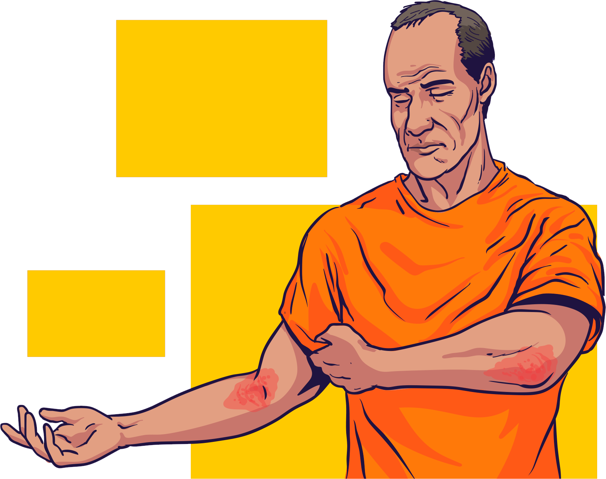
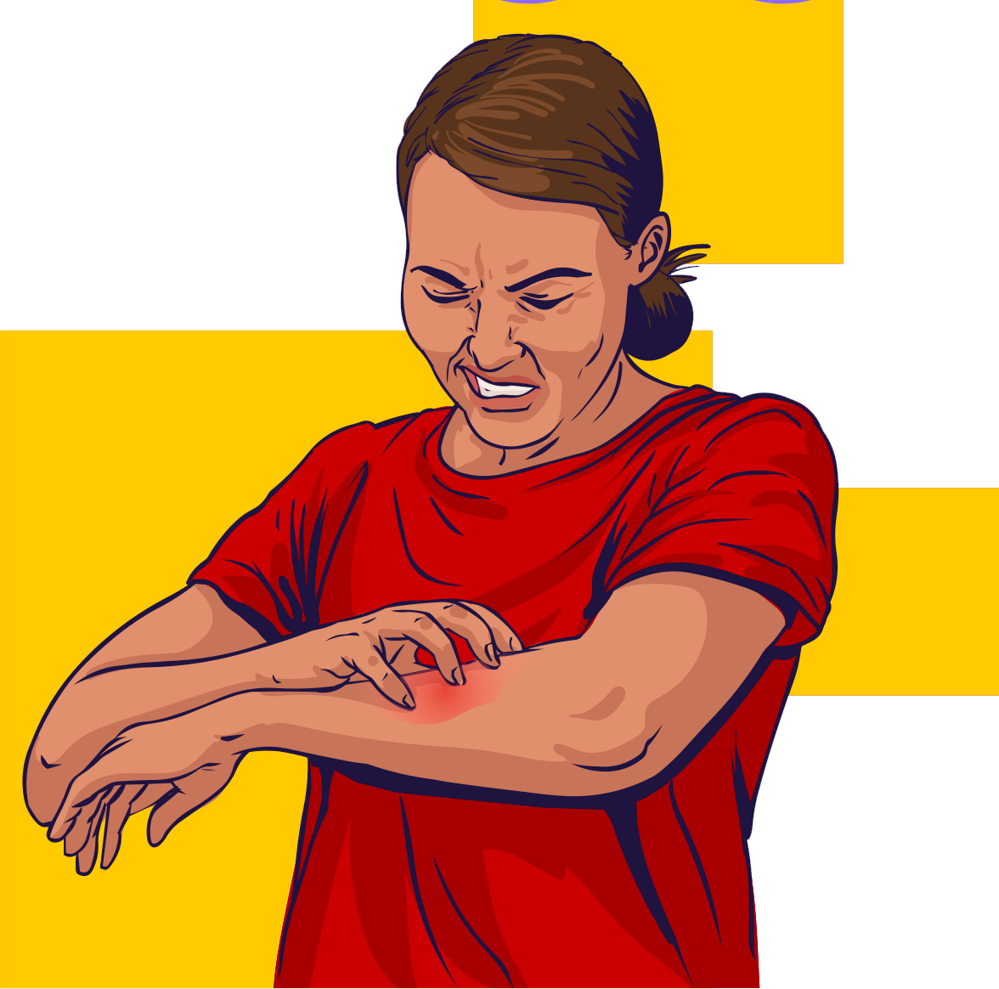
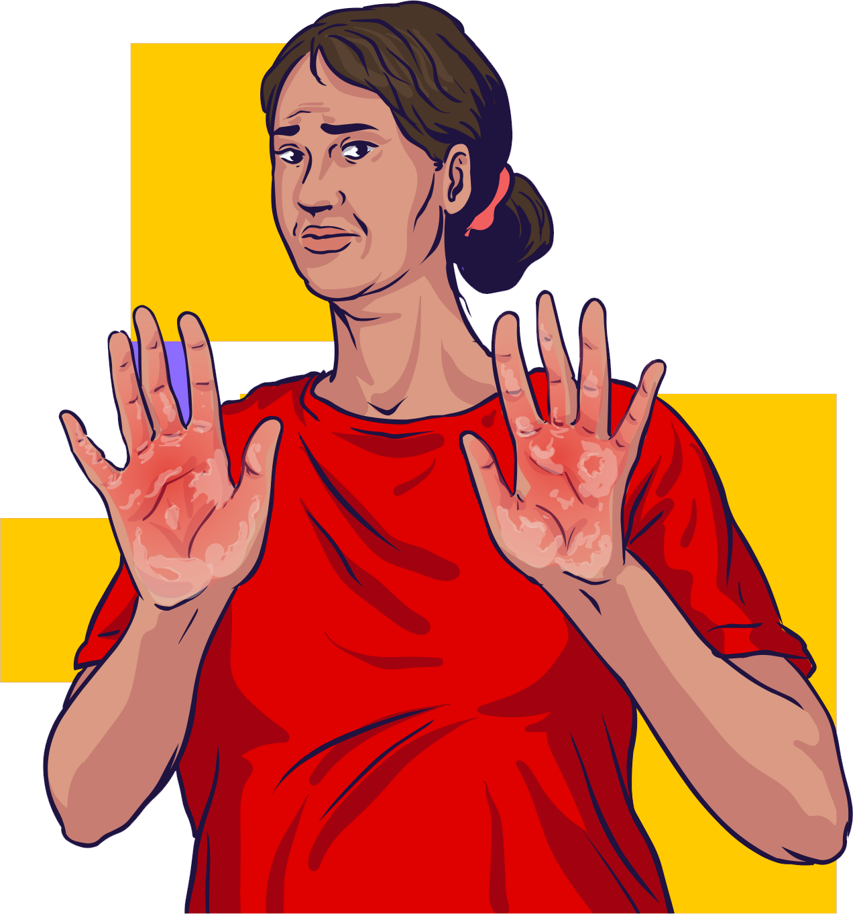
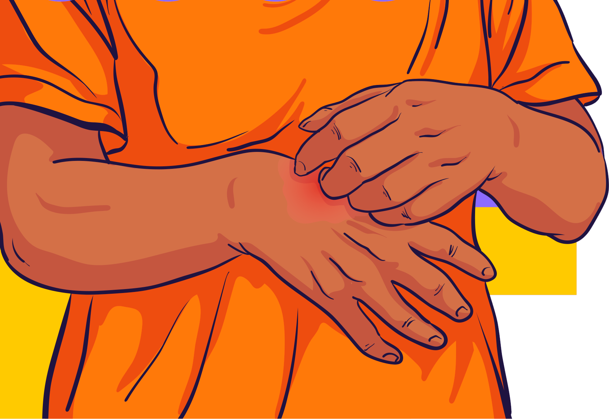

Vejamos resumidamente os principais aspectos relacionados a essas inflamações.
Clique em cada uma das abas para
conhecê-los.
Dermatite atópica
Doença alérgica, genética e crônica, na qual se observa inflamação da pele com períodos
alternados de melhora e piora;
Em adultos, lesões comuns nas dobras dos braços e joelhos;
Pode vir acompanhada de outras manifestações alérgicas, como a asma, a rinite ou ambas.


Dermatite atópica
Fatores que desencadeiam as crises: pólen, mofo, ácaro, lã, perfumes, material de
limpeza,
frio,
etc.;
Manifestações observadas: coceira intensa por causa da pele ressecada o que termina
acarretando
em lesões avermelhadas e
espessas, com áreas esfoladas e avermelhadas.
Dermatite de contato
Trata-se de uma reação inflamatória decorrente do contato com um agente químico;
Dois tipos identificados: irritativa (80% dos casos) e alérgica. A primeira é normalmente
desencadeada por substâncias
ácidas ou alcalinas, como é o caso do cimento e alguns produtos de limpeza. A segunda é
desencadeada pela exposição
contínua a químicos, como metais de bijuterias e aqueles presentes em produtos de higiene
pessoal, tais como sabonetes,
xampus, desodorantes, cremes, produtos químicos capilares, etc.


Dermatite de contato
Os sintomas não são imediatos, podendo ocorrer depois de algumas horas ou até alguns dias
após a
exposição ao agente.
Incluem ardor e coceira. A pele da pessoa fica avermelhada, havendo, às vezes formações de
vesículas (bolinhas com água
onde ocorreu o contato com o objeto causador da alergia);
Raramente ocorrem reações em vários locais do corpo.